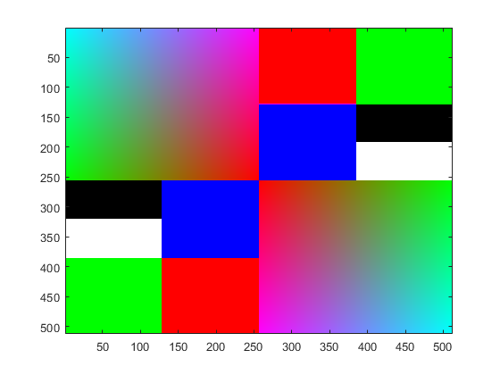

imagen=zeros(512,512,3,'uint8'); %imagen de 512x512 fondo negro
imagen(1:128,257:385,1)=255; %%rojo parte en la fila(1,128) y llega a la columa(257,385) imagen(1:128,386:511,2)=255; %%verde imagen(128:256,257:385,3)=255; %%azul imagen(192:256,386:511,:)=255; %%blanco imagen(386:512,129:256,1)=255; %lo mismo de arriba pero invertido imagen(386:512,1:128,2)=255; imagen(257:385,129:256,3)=255; imagen(321:385,1:128,:)=255;
%aca hice los bucles desde 1 a 256, para que los colores pudiesen partir %desde el uno hasta aumentar la intensidad al 256, por ejemplo, %para el primer caso parte por 1=negro y al ir aumentado los valores, %va cambiando a las diferentes tonalidades de rojo, al combinar los 3 %bucles nos queda la imagen dada, el rojo fue degradado de izquierda(negro) %a derecha(rojo),el verde de derecha(verde) a izquierda(negro), %y el azul fue degradado de abajo(azul) hacia arriba(negro) for ancho=1:256; for alto=1:256; imagen(ancho,alto,1)=uint8(alto); end end for ancho=1:256; for alto=1:256; imagen(ancho,alto,2)=uint8(256-alto); end end for ancho=1:256; for alto=1:256; imagen(ancho,alto,3)=uint8(256-ancho);% end end
for ancho=257:512; for alto=257:512; imagen(ancho,alto,1)=uint8(512-alto); %limite por la derecha era 512 por lo tanto lo reste al alto para que se degradara de izquierda a derecha end end for ancho=257:512; for alto=257:512; imagen(ancho,alto,2)=uint8(alto-256); %habia que ir aumentando en 1, hasta llegar a 256 end end for ancho=257:512; for alto=257:512; imagen(ancho,alto,3)=uint8(ancho-256); %lo mismo que arriba end end figure, imagesc(imagen);